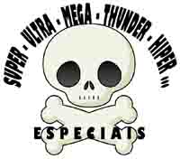

O Caso de Polícia abre espaço para mais um artigo extraeditorial (não tem hífen, certo?). Esse porém, não foi feito especialmente para nós, mas depois que li entrei logo em contato com o autor, pedindo permissão para publicar aqui.
O capitão da PM paulistana Décio Leão tem uma série de artigos (quer dizer, acho que é uma série, é o segundo que leio) que compõem o Manual EPC - Embusteration Picaretation Corporation. O primeiro li no blog do coronel Mário Sérgio, e chama-se Manual EPC para Especialistas em Segurança Pública, com dicas preciosas para quem deseja ter sua fotinha estampada nas primeiras páginas dos jornais popularescos, dando seus pitacos sobre segurança pública, ou mesmo galgar uma boquinha em bem remunerados empregos públicos, sem que precise passar por disputados concursos. Sensacional.
Mas esse segundo, eu não vi publicado ainda em lugar nenhum, então, com a devida vênia:
Manual EPC para criação de Grupos Especiais
por Décio Leão *
A proliferação de grupos policiais que se intitulam "Operações Especiais" aumentam a cada dia. Todas as corporações querem ter um grupo desse tipo e as vezes até uma unidade policial convencional quer inventar um serviço especial, diferenciado, que é claro, irá ter o nome de "especial".
A E.P.C. International (Embusteration Picaretation Corporation), tradicional organização mundial de embusteiros, incorporando-se ao espírito dos grupos especiais, colabora com a proliferação dessas hordas nos meios policiais através deste manual prático, que apresenta em dez lições, como criar um grupo especial.

1. SIGLA
É a primeira coisa que um grupo especial deve criar para poder ser um grupo especial. Antes de selecionar e qualificar pessoal, de adequar a legislação corporativa ao grupo e antes mesmo de operar, o grupo tem que ter uma sigla.
O grupo especial mais famoso do mundo, a SWAT de Los Angeles, chama-se oficialmente, apenas "Pelotão D". Que coisa mais em graça.
A sigla é fundamental para o marketing e para a identificação do grupo. O nome vem depois. Aliás, o nome tem tão pouca importância, que deve ser adequado à sigla, ainda que pareça uma coisa ridícula e sem nexo. Dê preferências a nome de bichos bravos e da fauna exótica. Afinal, quem liga para o nacionalismo.
A sigla pode ainda ser baseada em onomatopéias e ações. Para quem não sabe inglês, SWAT significa "tapa". Alguns exemplos que ainda não foram explorados:
- G.O.R.I.L.A. - Grupo de Operações de Resgate, Intervenções Letais e Assaltos;
- P.O.R.R.A.D.A. - Pelotão Operacional de Repressão a Roubos, Assaltos e Desativação de Artefatos explosivos;
- L.E.O.P.A.R.D. - Liga Especial de Operações Policiais e Ações de Repressão a Delitos.
2. UNIFORME
A segunda coisa mais importante para criar um grupo especial é o uniforme diferenciado. Se o uniforme não for bem diferente da sua corporação policial, não existirá então razão para o grupo ser especial.
Especial significa acima de tudo, ser diferente. Como o grupo especial vai operar se usar a mesma roupa dos demais policiais? Impossível. O hábito faz o monge.
Escolha um uniforme bem espalhafatoso, com muitos bolsos. Ponha bolsos nas pernas, nas mangas, na jaqueta, onde for possível, mesmo que você saiba que nunca vai usar tantos bolsos e que eles até atrapalham o uso dos demais equipamentos. Mas dão um visual bem legal e imagem é o que importa.
Preto e camuflado urbano são as cores preferidas, mas não são suficientes. Coloque adereços para chamar a atenção, como braçais cheios de letras de metal (isso também atrapalha a ação operacional, mas quem liga para isso) e boinas coloridas. Preferencialmente vermelha, ainda que a boina vermelha seja tradicionalmente a boina das tropas pára-quedistas.
3. BREVÊ
Grupo especial que se preze tem que ter um brevê bem embusteiro. E o pessoal não se contenta com símbolos simples, práticos, objetivos, de fácil identificação visual. Olha que coisa mais sem graça os símbolos da Volkswagem, do Mc'Donalds e da Microsoft, que a gente bate o olho e já sabe o que significa. Esses especialistas em comunicação visual estão por fora. Não entendem nada de grupos especiais.
O brevê de um grupo especial tem que mostrar tudo o que o grupo faz. Quanto mais cheio de bagulhos, mais operacional será a imagem do grupo.
Dicas para fazer um bom brevê de grupo especial: ponha uma caveira. Todo grupo especial brasileiro tem uma caveira. Uma caveira bem feia, zangada.
Ponha agora uma faca. Pode ser de baixo para cima, de cima para baixo, de lado, de frente para traz. Mas ponha a faca.
Ponha agora uns raios. Uma boina. Um chapéu de selva. Metralhadora e fuzil. Não pode faltar a metralhadora e o fuzil cruzado. Que tal agora por no brevê uns ramos, umas folhagens, talvez uma floresta inteira, pois o grupo especial também atua na selva. Está faltando um cara descendo de rapel. Ele pode sair do olho da caveira e invadir o nariz, ao mesmo tempo que uma viatura dá um cavalo-de-pau na boca da caveira e um grupo tático arromba a porta do prédio próximo ao pescoço da caveira. É bom achar um lugar para o “sniper” e para os mergulhadores de combate. Faltou alguma coisa? O PÁRA-QUEDAS!!! Cadê o pára-quedas? Ponha um pára-quedas.
4. ARMAS
Muitas armas. Um grupo especial precisa estar bem armado, preferencialmente com armas frias, de origem duvidosa, calibres não convencionais, que tornem impossível qualquer rastreamento ou perícia. Ainda que oitenta por cento das ocorrências com reféns sejam solucionadas sem o uso de armas de fogo e que a maioria dos tiroteios ocorram com armas curtas e ainda que ninguém saiba usar as armas (e às vezes sem saber para que servem essas armas). A quantidade de armamento deve ser capaz de impressionar qualquer colecionador. No mínimo, três pistolas e um fuzil para cada operador do grupo.
Aonde enfiar esse monte de armas? Pergunte aos presidiários. Eles têm técnicas muito boas.
5. VIATURA
A viatura do grupo especial precisa ter basicamente, insufilm. Transparência meio por cento. O vidro tem que estar preto o suficiente para ninguém ver o que se passa dentro da viatura. A pintura externa também precisa ser bem caracterizada, com um monte de pinduricalhos, logotipos e é claro, a marca do patrocinador.
Como já foi apresentado anteriormente, a viatura tem que ser diferente. Se ficar parecida com as viaturas da corporação, não será viatura de grupo especial. Nada de pinturas de discretas, apenas para identificação interna. Tem que aparecer bastante. Na dúvida, pendure uma melancia.
6. CURSO
A formação de um policial de tropa especial não é fácil. Tem que ser forjado à moda antiga, como nossas avós faziam pão caseiro. Muita porrada na massa.
Basicamente, o curso precisa de três elementos: corrida, flexão e água. Comece o curso correndo loucamente, sem parar. A primeira corrida só termina quando pelo menos cinco participantes pedirem desligamento do curso.
Em seguida, aplique flexões de braços, cangurus e outros exercícios físicos até a fadiga muscular completa. Se ainda sobrarem candidatos ao grupo especial, jogue-os em uma piscina funda até alguém se afogar. Não importa que a porcentagem de ocorrências do grupo especial em ambiente aquático seja zero. O que importa é mostrar o quanto é difícil fazer parte do grupo especial.
Importante: Esqueça técnicas policiais, táticas, treinamento de tiro e avaliações psicológicas. Isso custa caro e pode mostrar aos novos candidatos um lado obscuro do grupo especial que não precisa ser mostrado para ninguém.
7. CHEFE APARECIDO
O chefe é a alma do grupo especial. Ele tem que carismático e boa pinta, mas principalmente aparecido, vaidoso, arrogante e orgulhoso. Afinal, é ele que irá divulgar o grupo especial, estar à frente das entrevistas, nas capas de revista e manchetes dos jornais. Imaginem um chefe de grupo especial que não gosta de mostrar o rosto na imprensa, como os ingleses do SAS ou os franceses do GIGN? Esses europeus não sabem o que estão perdendo em termos de popularidade. Sem dizer que são um bando de medrosos paranóicos, achando que os terroristas são vingativos.
E a atuação artística do chefe aparecido não pode se limitar em sair abraçado com bandido no final da ocorrência. Tem que aparecer em programas de entrevistas, colunas sociais e em ocorrências de outras especialistas, como brigas em jogos de futebol televisionados e quem sabe, puxar o trânsito durante uma boletim especial do telejornal.
8. IMPRENSA
A tropa é o reflexo do comandante, já dizia o antigo ditado militar. O grupo especial não pode perder as oportunidades de aparecer na imprensa.
Como diz o lema, “ser e aparecer”. Tem que estar sempre na mídia. Use todos os recursos da vida moderna: jornais, revistas, televisão, internet e tudo mais que possa divulgar o grupo “mais secreto da polícia”. Sim, porque se não houver a chamada de que o grupo é ultra-secreto, a “arma” mais bem escondida da polícia, pela primeira vez (na semana) revelada aos telespectadores, tão secreto, mas tão secreto, que nem suas mães sabem onde trabalham, com certeza não haverá audiência.
Apresentação padrão que não pode faltar ao grupo especial: descida de rapel com invasão de sacada e tiro em bexiga. Além da imperdível entrevista do chefe aparecido com a tropa ao fundo, todos com bala-clava e empunhando armas.
Matéria no programa do Otávio Mesquita é o bicho, mas se conseguir aparecer no banco de convidados especiais da Luciana Gimenez, será a glória do grupo especial.
9. PACTO SECRETO
O penúltimo, porém não menos importante elemento de criação do grupo especial é o pacto secreto entre seus integrantes. Vale qualquer tipo de ritual místico que dê um ar de compromisso sagrado: beber sangue de galinha, furar o dedo com a faca especial do grupo, usar o anel secreto, tatuar o símbolo do grupo no peito.
O mais importante é que os integrantes do grupo especial se sintam como uma polícia à parte da corporação, acima das leis, regulamentos e dos comandantes. Aliás, acima até mesmo dos demais colegas de trabalho, que a partir de agora devem ser encarados como uma sub-raça, seres inferiores, de pouca luz, que não possuem as mínimas condições de sequer limpar as botas do grupo especial.
A postura dos integrantes do grupo especial é fundamental para o sucesso do grupo: silêncio absoluto, reuniões secretas, jamais comentar o que ocorreu com outras pessoas, principalmente se ocorreu alguma desgraça na ocorrência (que foi por culpa do refém, provavelmente). Nunca cumpra ordens superiores. Lembre-se de que o grupo especial está acima dessas frescuras.
10. ESCÂNDALO
Todo grupo especial tem seu escândalo. Morte de reféns, execução filmada pela velhinha da janela, envolvimento com traficantes e outros criminosos, chefe denunciado por corrupção. Vale qualquer tipo de escândalo. Mas não se preocupe com esse item, pois seguindo as dicas deste manual, somando-se a incompetência do chefe, a incapacidade técnica, incompetência, arrogância e orgulho, logo levarão o grupo especial à ruína.
Com sorte da sociedade, isso poderá ocorrer antes mesmo que o grupo comece a atuar. Boa sorte e que Deus nos proteja.
* por Décio Leão - Capitão da Polícia Militar do Estado de São Paulo